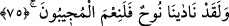

çok kıymetli mücevherlerdir. Kim atının ayağına dokunan nesneleri kaldırıp alırsa çok
zengin olur. Kim de emre muhalefet eder, söz dinlemezse ebedi olarak hasret, nedâmet
ve pişmanlık duyar” demiştir.
Keşke denemek için bir yük,
Ekmek, zâhire miktarı olsun alaydım
Şimdi zenginlerden olurdum
Vaktim gördüğün gibi meşakkatle geçmezdi
Keşke mücevheri yük edip getirseydim
İskender’i reddetmeseydim
O kusurdan dolayı düşmezdim,
Böyle bir mahcubiyete ve utanılacak duruma.
Kâfir ile müslümanın hâli de böyledir,
Bu dar ve karanlık yerde (dünyada).
Madem ki Allah’tan kitap ve rasul geldi
Kâfir red ile, müslüman kabul ile ileri gitti
Kâfirler fesad ve azgınlık cihetinden,
İnat ve serkeşlik kapısından başka kapı çalmadılar
Mü’minler yüzünü peygamber kapısına çevirdiler,
Hem “işittik” hem de “itaat ettik” dediler
İnkârın sonu belâ ve musibet oldu
İkrârın sonu lütuf ve ihsanlar oldu
Hakikat yoluna ulaşmak Allah Teâlâ’nın yardım ve inayetiyledir.
75. Andolsun, Nuh bize yalvarıp yakardı. Biz de duayı ne güzel kabul ederiz!
“Andolsun, Nuh bize yalvarıp yakardı.” Bu ve devamındaki âyetler, uyarıcı konumda
olan peygamberlerin güzel sonları ile uyarılan konumda olan ümmetlerin kötü sonlarını
tafsilatlı olarak ele almakta, örneklendirmektedir. Burada “ kelimesi “dua”
mânâsındadır. Karinesi “Biz de duayı ne güzel kabul ederiz!” âyetidir. Mânâ şöyledir:
“Allah’a yemin olsun ki elbette Nuh bize yalvarıp yakardı.” Nuh (a.s.) rasûllerin ilkidir.
Kavmini asırlarca imana dâvet etmiş ancak bu dâvet onların sadece nefret ve firarlarını
artırmıştır. Biz de düşmanlarına karşı Nuh (a.s.)’a yardım ederek ve düşmanlarından
müthiş bir intikam alarak Nuh’a en güzel şekilde icabet ettik. Zikredilenlerin delâletine
güvenerek bu sözde bazı hazif ve kısaltmalar yapılmıştır.
“Duayı kabul edenler” anlamına gelen “ kelimesinin çoğul oluşu, Allah